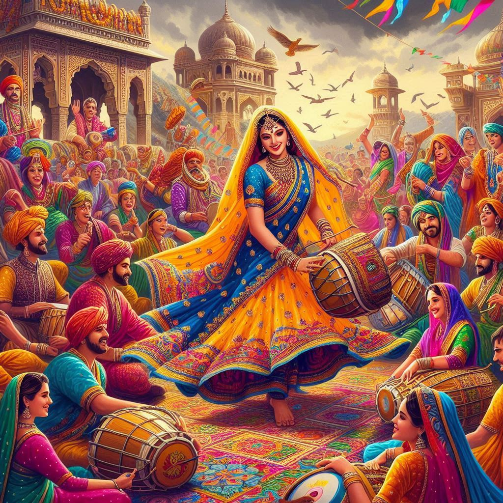
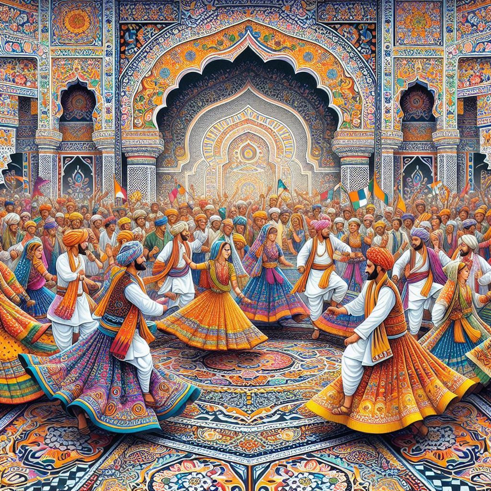

The culture of Gujarat is a vibrant tapestry of traditions, music, dance, cuisine, festivals, and art, reflecting its rich heritage and history. Situated on the western coast of India, Gujarat has been a melting pot of diverse influences, including Hindu, Jain, Muslim, and Parsi cultures. The state is well-known for its colorful festivals, traditional dances, intricate crafts, and a deep sense of pride in its traditions.
1. Traditions and Festivals
- Navratri: The most prominent festival celebrated in Gujarat is Navratri, a nine-day festival dedicated to Goddess Durga. During Navratri, Gujaratis perform the Garba and Dandiya Raas dances with traditional music, wearing vibrant attire. The festivities include elaborate decorations, cultural performances, and prayers, making it one of the grandest celebrations in India.
- Rann Utsav: Celebrated in the Rann of Kutch, this festival showcases the art, crafts, culture, and natural beauty of the region. Visitors experience camel rides, folk dances, music performances, and an immersive look at the desert landscape under the moonlight.
- Makar Sankranti (Uttarayan): Known for the International Kite Festival, this event transforms Gujarat’s skies into a riot of colors, as people fly kites of all shapes and sizes.
- Other Festivals: Gujarat also celebrates Diwali, Holi, Janmashtami, and Mahashivratri with great fervor. Each festival is marked by unique rituals, food, and communal gatherings.
2. Dance and Music
- Garba and Dandiya Raas: These folk dances are integral to Gujarat’s culture and performed during Navratri. Garba involves rhythmic clapping and circular movements around a lamp or deity, while Dandiya Raas is performed with decorated sticks in pairs.
- Folk Music: Gujarat’s folk music, like Sugam Sangeet, Bhajans, and Dayro, often revolves around devotion, storytelling, and celebration of life’s joys.
- Classical Influences: Gujarati music is also influenced by classical traditions, and the state has a rich tradition of devotional songs and instruments like the tabla, dhol, manjira, and harmonium.
3. Art and Craft
- Textiles: Gujarat is known for its exquisite textiles, such as Bandhani (tie-dye), Patola silk sarees, Ajrakh block printing, and Kutchi embroidery. These crafts reflect intricate designs and a long-standing tradition of weaving and dyeing.
- Jewelry and Handicrafts: Gujaratis excel in jewelry-making, particularly in silver and gold. Traditional designs include kundan, meenakari, and filigree work. Handicrafts like beadwork, wood carving, pottery, and mirror work are highly sought after.
- Pithora Paintings: This tribal art form, done by the Bhil and Rathwa communities, depicts mythological stories and daily life.
4. Cuisine
- Vegetarian Cuisine: Gujarati food is predominantly vegetarian and features a mix of sweet, salty, and spicy flavors. The Gujarati thali is famous for its variety, including dishes like dal, kadhi, khichdi, thepla, dhokla, khandvi, fafda, and undhiyu.
- Snacks and Sweets: Snacks like farsan, sev khamani, and kachori are popular, and sweets like shrikhanda, mohanthal, and basundi are enjoyed during festivals.
- Street Food: Gujarat’s street food culture is vibrant, with dishes such as chaat, pav bhaji, bhajiya, and vada pav attracting food lovers.


5. Religion and Spirituality
- Temples: Gujarat is home to some of the most revered temples in India, including the Somnath Temple, Dwarkadhish Temple, Akshardham Temple, and Sun Temple in Modhera. Jainism has a strong influence, evident in temples like Palitana and Shatrunjaya.
- Religious Tolerance: The state’s culture emphasizes tolerance and respect for different religions. The Parsees, Muslims, Christians, and Jains have peacefully coexisted with the Hindu majority, creating a diverse spiritual atmosphere.
6. Traditional Dress
- Men: Traditional Gujarati men’s attire includes the kediyu (a long-sleeved, pleated shirt) and dhoti or churidar. During festivals, men often wear colorful turbans or pagris.
- Women: Women typically wear sarees, chaniya cholis (embroidered skirts with blouses and dupattas), adorned with jewelry and intricate embroidery. Mirror work and vibrant colors are prominent in their festive wear.
7. Heritage and Monuments
Gujarat boasts a rich history with ancient sites like Lothal (Indus Valley Civilization) and architectural marvels like the Rani ki Vav (Queen’s Stepwell), a UNESCO World Heritage Site. The Sabarmati Ashram in Ahmedabad is a significant site associated with Mahatma Gandhi’s freedom movement.
8. Social Customs and Values
- Community Living: Gujaratis value community and family life, emphasizing hospitality and respect for traditions.
- Entrepreneurship: The state is known for its enterprising spirit, producing successful businesspeople and entrepreneurs.
Conclusion
Gujarat's culture is a blend of tradition and modernity, offering a rich heritage of art, dance, cuisine, and festivals. The state celebrates life with vibrancy, making it a unique and culturally enriching destination in India.